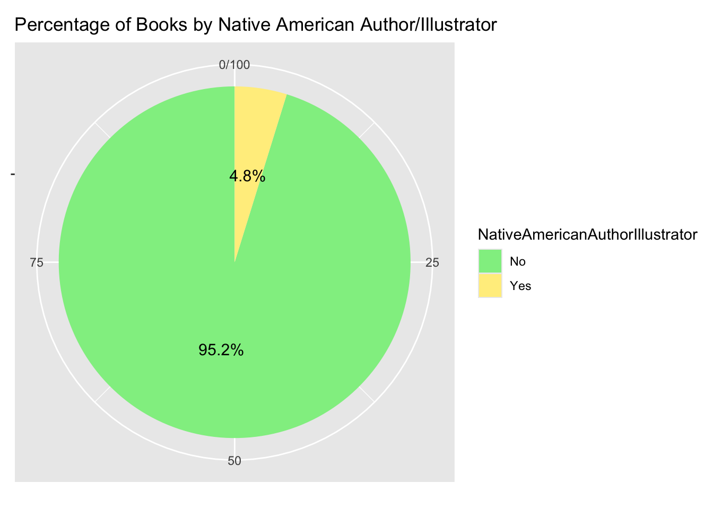

Basic Visualization for Book Coding Projects
Allison Li
04242025
I would like to create some basic visualization for a book coding project. This book coding project is an exploratory study that codes and examines how race/ethnicity is depicted in children’s books about race. By investigating both representation of diversity, types of intergroup contacts, acquired information about race and culture, and intergroup bias reduction strategies, this project aims to understand how the present books talks about diversity and build the first step for future studies to investigate whether certain strategy is more effective in media for bias reduction. One thing I would like to note is that these dataset are from Dr. Katharine Scott, me and Sophie Boyld’s project, and some of the codes are already written by Dr. Scott. My project here mainly focuses on the visualization rather than how to analyze some of the research questions.
For this portfolio, I would like to first, see the overview information about the books.
Step 1: visualization of basic book information
racial/ethnic representation of authors
Question: What percent of the books had at least one author/illustrator who was each race/ethnicity? This includes people who were biracial/multiracial but who at least partially identified as the selected race.
Asian/Asian American
## AsianAuthorIllustrator Count Percentage
## 1 No 165 87.76596
## 2 Yes 23 12.23404Black
## BlackAuthorIllustrator Count Percentage
## 1 No 78 41.48936
## 2 Yes 110 58.51064Hispanic
## HispanicAuthorIllustrator Count Percentage
## 1 No 169 89.89362
## 2 Yes 19 10.10638
Middle Eastern
## MiddleEasternAuthorIllustrator Count Percentage
## 1 No 179 95.212766
## 2 Yes 9 4.787234
Native American
## NativeAmericanAuthorIllustrator Count Percentage
## 1 No 179 95.212766
## 2 Yes 9 4.787234
Native Hawaiian / Pacific Islander
## NativeHawaiianPacificIslanderAuthorIllustrator Count Percentage
## 1 No 188 100This could either be lacking representation of NHPI authors/illustrators among the books we examined, or could be that the coders were unable to find further ethnic background information about the authors so they categrized them into Asians or other ethnic racial minority groups.
White
## WhiteAuthorIllustrator Count Percentage
## 1 No 115 61.17021
## 2 Yes 73 38.82979 The general Pie Chart
The general Pie Chart
race_cols <- c("blackAuthorIll", "hispanicAuthorIll", "middleEasternIll",
"nativeAuthorIll", "nhpiAuthorIll", "whiteAuthorIll", "asianAuthorIll")
##Convert to logical (TRUE/FALSE) in case they are "Yes"/"No"
d_logical <- dWide[, race_cols] == "Yes"
##Sum
race_counts <- colSums(d_logical)
total_books <- nrow(dWide)
race_percent <- colSums(d_logical) / total_books * 100
##Convert to a data frame for plotting
race_num <- data.frame(
Race = names(race_counts),
Count = as.vector(race_counts)
)
race_percentage <- data.frame(
Race = names(race_percent),
Percentage = round(as.vector(race_percent), 1)
)
ggplot(race_num, aes(x = reorder(Race, -Count), y = Count, fill = Race)) +
geom_bar(stat = "identity") +
labs(title = "Number of Books Featuring Each Ethnic/Racial Group (Author or Illustrator)",
x = "Ethnic/Racial Group", y = "Number of Books") +
theme_minimal() +
theme(legend.position = "none") +
geom_text(aes(label = Count), vjust = -0.5)
ggplot(race_percentage, aes(x = reorder(Race, -Percentage), y = Percentage, fill = Race)) +
geom_bar(stat = "identity") +
geom_text(aes(label = paste0(Percentage, "%")), vjust = -0.5, size = 4) +
labs(title = "Percentage of Books Featuring Each Ethnic/Racial Group (Author or Illustrator)",
x = "Ethnic/Racial Group", y = "Percentage of Books") +
coord_flip() Temporal settings of the books
Question: Are the books contemporary, historical, fantastical, or combination of contemporary and historical?
library(forcats)
table <- table(dWide$temporalSetting)
counts <- as.vector(table)
percentages <- counts / sum(counts) * 100
result <- data.frame(
"TemporalSetting" = names(table),
Count = counts,
Percentage = percentages
)
print(result)## TemporalSetting Count Percentage
## 1 Contemporary (current day) 129 68.617021
## 2 Contemporary (current day),Historical 17 9.042553
## 3 Fantastical/non-human 9 4.787234
## 4 Historical 33 17.553191result <- result %>%
mutate(TemporalSetting = fct_recode(TemporalSetting,
"Contemporary" = "Contemporary (current day)",
"Contemporary + Historical" = "Contemporary (current day),Historical",
"Fantastical/non-human" = "Fantastical/non-human",
"Historical" = "Historical"
))
ggplot(result, aes(x = reorder(TemporalSetting, -Percentage), y = Percentage, fill = TemporalSetting)) +
geom_bar(stat = "identity") +
geom_text(aes(label = paste0(round(Percentage, 1), "%")), vjust = -0.5, size = 4) +
labs(title = "Temporal Setting of Books",
x = "Setting Type", y = "Percentage of Books") +
theme_minimal() +
theme(legend.position = "none")ggplot(result, aes(x = "", y = Percentage, fill = TemporalSetting)) +
geom_bar(width = 1, stat = "identity") +
coord_polar("y") +
geom_text(aes(label = paste0(round(Percentage, 1), "%")),
position = position_stack(vjust = 0.5), size = 3.6) +
labs(title = "Temporal Setting of Books")+
scale_fill_manual(values = c("Contemporary" = "#d5d1e9", "Contemporary + Historical" = "#d0e4ee", "Fantastical/non-human" = "#F3f5a9", "Historical" = "#f5cf9f"))+
theme_void()### Fiction/non-fiction/combo Question: Are the books fiction, non-fiction, or some combination??
table <- table(dWide$fiction)
counts <- as.vector(table)
percentages <- counts / sum(counts) * 100
result <- data.frame(
"Fiction" = names(table),
Count = counts,
Percentage = percentages
)
print(result)## Fiction Count Percentage
## 1 Combination of fiction and non-fiction 46 24.468085
## 2 Fiction 125 66.489362
## 3 Non-fiction 17 9.042553ggplot(result, aes(x = "", y = Percentage, fill = Fiction)) +
geom_bar(stat = "identity", width = 1) +
coord_polar("y") +
geom_text(aes(label = paste0(round(Percentage, 1), "%")),
position = position_stack(vjust = 0.5), size = 4) +
scale_fill_manual(values = c("Non-fiction" = "#EDCBD2", "Fiction" = "#C3E0DD", "Combination of fiction and non-fiction" = "#FAE9DA"))+
labs(title = "Fiction, Nonfiction, or Combination of Both") +
theme_void()
##Step 2: Diversity of characters in the book
This whole chunk is analyzed by Dr. Scott because I am not sure how to do this. According to her “control for the similarities among characters within a particular book, I gave each book a single value for the percent of characters in the book of each race/value/gender/etc. Then we can look at the representation across books that controls for the number of characters in a book.” I only copy paste this part because the following analysis needs this part
result <- dLong %>%
# Group by book and race
group_by(bookID, characterRace) %>%
# Count occurrences of each race within each book
summarise(count = n(), .groups = "drop") %>%
# Calculate total characters per book
group_by(bookID) %>%
mutate(total_characters = sum(count),
percentage = count / total_characters) %>%
# Pivot to create percentage columns for each race
pivot_wider(
id_cols = bookID,
names_from = characterRace,
values_from = percentage,
names_prefix = "characterRacePercent",
values_fill = 0
)
# Join the results back to the original dataframe and create dLongChar
dLongChar <- dLong %>%
left_join(result, by = "bookID")Main Question: Who is captured in children’s books about race
Race diversity of each character per book
#Create a vector of column names
columns <- c("characterRacePercentW", "characterRacePercentB", "characterRacePercentambi",
"characterRacePercentH", "characterRacePercentNative", "characterRacePercentA",
"characterRacePercentME", "characterRacePercentmulti", "characterRacePercentNHPI")
#Create an empty dataframe to store results
result_table <- data.frame(Column = columns,
Mean = numeric(length(columns)),
SD = numeric(length(columns)))
#Calculate mean and SD for each column
for (i in 1:length(columns)) {
result_table$Mean[i] <- mean(dW[[columns[i]]], na.rm = TRUE)
result_table$SD[i] <- sd(dW[[columns[i]]], na.rm = TRUE)
}
#Round the results to 2 decimal places
result_table$Mean <- round(result_table$Mean, 2)
result_table$SD <- round(result_table$SD, 2)
#Print the resulting table
print(result_table)## Column Mean SD
## 1 characterRacePercentW 0.26 0.23
## 2 characterRacePercentB 0.47 0.34
## 3 characterRacePercentambi 0.07 0.14
## 4 characterRacePercentH 0.04 0.15
## 5 characterRacePercentNative 0.05 0.20
## 6 characterRacePercentA 0.07 0.16
## 7 characterRacePercentME 0.02 0.07
## 8 characterRacePercentmulti 0.02 0.06
## 9 characterRacePercentNHPI 0.00 0.01#Plot!
result_table$Race <- c("White", "Black", "Ambiguous", "Latinx", "Native",
"Asian", "Middle Eastern", "Multiracial", "NHPI")
ggplot(result_table, aes(x = reorder(Race, -Mean), y = Mean)) +
geom_bar(stat = "identity", fill = "lightblue") +
geom_errorbar(aes(ymin = Mean - SD, ymax = Mean + SD), width = 0.2) +
labs(title = "Average Racial Representation of Characters per Book",
x = "Character Race",
y = "Mean Percentage of Characters") +
theme_minimal()
Valence representation of each character per book
columns <- c("characterValencePercentpos", "characterValencePercentneg", "characterValencePercentneut", "characterValencePercentmix")
#Create an empty dataframe to store results
result_table <- data.frame(Column = columns,
Mean = numeric(length(columns)),
SD = numeric(length(columns)))
#Calculate mean and SD for each column
for (i in 1:length(columns)) {
result_table$Mean[i] <- mean(dW[[columns[i]]], na.rm = TRUE)
result_table$SD[i] <- sd(dW[[columns[i]]], na.rm = TRUE)
}
#Round the results to 2 decimal places
result_table$Mean <- round(result_table$Mean, 2)
result_table$SD <- round(result_table$SD, 2)
#Print the resulting table
print(result_table)## Column Mean SD
## 1 characterValencePercentpos 0.84 0.22
## 2 characterValencePercentneg 0.10 0.16
## 3 characterValencePercentneut 0.05 0.12
## 4 characterValencePercentmix 0.01 0.05#Plot again!
result_table$Column <- c()
ggplot(result_table, aes(x = reorder(columns, -Mean), y = Mean)) +
geom_bar(stat = "identity", fill = "lightblue") +
geom_errorbar(aes(ymin = Mean - SD, ymax = Mean + SD), width = 0.2) +
labs(title = "Average Valence of Each Character per Book",
x = "Character Valence",
y = "Mean Percentage of Characters") +
scale_x_discrete(labels = c(
"characterValencePercentpos" = "Positive",
"characterValencePercentneg" = "Negative",
"characterValencePercentneut" = "Neutral",
"characterValencePercentmix" = "Mixed"
)) +
theme_minimal()
###Gender of each race depicted in the books
columns <- c("characterGenderPercentfemale", "characterGenderPercentmale", "characterGenderPercentunclear")
#Create an empty dataframe to store results
result_table <- data.frame(Column = columns,
Mean = numeric(length(columns)),
SD = numeric(length(columns)))
#Calculate mean and SD for each column
for (i in 1:length(columns)) {
result_table$Mean[i] <- mean(dW[[columns[i]]], na.rm = TRUE)
result_table$SD[i] <- sd(dW[[columns[i]]], na.rm = TRUE)
}
#Round the results to 2 decimal places
result_table$Mean <- round(result_table$Mean, 2)
result_table$SD <- round(result_table$SD, 2)
#Print the resulting table
print(result_table)## Column Mean SD
## 1 characterGenderPercentfemale 0.50 0.18
## 2 characterGenderPercentmale 0.47 0.18
## 3 characterGenderPercentunclear 0.03 0.07#Plot again!
result_table$Column <- c()
ggplot(result_table, aes(x = reorder(columns, -Mean), y = Mean)) +
geom_bar(stat = "identity", fill = "#f5cf9f") +
geom_errorbar(aes(ymin = Mean - SD, ymax = Mean + SD), width = 0.2) +
labs(title = "Average Valence of Each Character per Book",
x = "Character Valence",
y = "Mean Percentage of Characters") +
scale_x_discrete(labels = c(
"characterGenderPercentfemale" = "female",
"characterGenderPercentmale" = "male",
"characterGenderPercentunclear" = "unclear"
)) +
theme_minimal()
##Step 3: Intervention Strategies in the books
We have included four main intervention strategies that might be depicted in the book to reduce intergroup racial bias, which are intergroup contact, individuation, perspective taking, and positive exemplars.
presence of intergroup contact
What percentage of books depicted intergroup contact?
interventions_clean <- interventions %>%
filter(!is.na(contact))
table <- table(interventions_clean$contact)
counts <- as.vector(table)
percentages <- counts / sum(counts) * 100
result <- data.frame(
"contact" = names(table),
Count = counts,
Percentage = percentages
)
print(result)## contact Count Percentage
## 1 0 41 21.80851
## 2 1 147 78.19149What percentage of books depicted intergroup contact between children
table <- table(interventions$contactChildren)
counts <- as.vector(table)
percentages <- counts / sum(counts) * 100
result <- data.frame(
"Contact Between Children" = names(table),
Count = counts,
Percentage = percentages
)
print(result)## Contact.Between.Children Count Percentage
## 1 0 84 44.68085
## 2 1 104 55.31915What percentage of books depict intergroup contact between children, between adults, and between children and adult?
library(dplyr)
library(tidyr)
contact_long <- interventions %>%
dplyr::select(contactChildren, contactAdults, contactChildAdult) %>%
pivot_longer(cols = everything(),
names_to = "ContactType",
values_to = "Presence") %>%
filter(!is.na(Presence)) %>%
dplyr::mutate(ContactType = dplyr::recode(ContactType,
"contactChildren" = "Children",
"contactAdults" = "Adults",
"contactChildAdult" = "Child + Adult"),
Presence = dplyr::recode(as.character(Presence),
"1" = "Yes",
"0" = "No"))
contact_summary <- contact_long %>%
group_by(ContactType, Presence) %>%
summarise(Count = n(), .groups = "drop") %>%
group_by(ContactType) %>%
mutate(Percentage = Count / sum(Count) * 100,
Label = paste0(Presence, "\n", round(Percentage, 1), "%"))
ggplot(contact_summary, aes(x = "", y = Percentage, fill = Presence)) +
geom_bar(stat = "identity", width = 1) +
coord_polar("y") +
geom_text(aes(label = Label),
position = position_stack(vjust = 0.5),
size = 3, color = "black") +
facet_wrap(~ ContactType) +
scale_fill_manual(values = c("No" = "#d5d1e9", "Yes" = "#d0e4ee")) +
labs(title = "Presence of Intergroup Contact Types in Books",
fill = "Contact Present") +
theme_void() +
theme(
strip.background = element_rect(fill = "gray90"),
strip.text = element_text(size = 12, face = "bold"),
legend.position = "bottom"
)
presence of perspective taking
What percentage of books depicted perspective taking?
interventions <- interventions %>%
mutate(pt_any = if_else(
emotionsBasic == 1 | emotionsDiscrim == 1 | emotionsPT == 1 | emotionsPT2 == 1,
1, 0
))
##four codes for PT
interventions %>%
summarise(percent_with_PT = round(mean(pt_any == 1, na.rm = TRUE) * 100, 1))## # A tibble: 1 × 1
## percent_with_PT
## <dbl>
## 1 83pt_vars <- c("emotionsBasic", "emotionsDiscrim", "emotionsPT", "emotionsPT2")
#Reshape to long format
pt_long <- interventions %>%
select(all_of(pt_vars)) %>%
pivot_longer(cols = everything(),
names_to = "PerspectiveType",
values_to = "Present") %>%
filter(!is.na(Present)) # remove any missing values
##Summarize the percent of books with each type
pt_summary <- pt_long %>%
group_by(PerspectiveType) %>%
summarise(
Count = sum(Present == 1),
Total = n(),
Percentage = round(Count / Total * 100, 1),
.groups = "drop"
)
print(pt_summary)## # A tibble: 4 × 4
## PerspectiveType Count Total Percentage
## <chr> <int> <int> <dbl>
## 1 emotionsBasic 147 188 78.2
## 2 emotionsDiscrim 68 188 36.2
## 3 emotionsPT 56 188 29.8
## 4 emotionsPT2 19 188 10.1#Plot~~
pt_summary$PerspectiveType <- dplyr::recode(pt_summary$PerspectiveType,
"emotionsBasic" = "Emotion highlighted",
"emotionsDiscrim" = "Feelings of Discrimination",
"emotionsPT" = "Perspective Taking Implicit",
"emotionsPT2" = "Perspective Taking Explicit"
)
# Create bar plot
ggplot(pt_summary, aes(x = reorder(PerspectiveType, -Percentage), y = Percentage, fill = PerspectiveType)) +
geom_bar(stat = "identity") +
geom_text(aes(label = paste0(Percentage, "%")), vjust = -0.5, size = 3) +
labs(
title = "Percentage of Books Showing Each Type of Perspective Taking",
x = "Perspective-Taking Type",
y = "Percentage of Books"
) +
scale_fill_manual(values = c("Emotion highlighted" = "#EDCBD2", "Feelings of Discrimination" = "#C3E0DD", "Perspective Taking Implicit" = "#FAE9DA", "Perspective Taking Explicit" = "#d5d1e9"))+
theme_minimal() +
theme(
axis.text.x = element_text(angle = 30, hjust = 1),
legend.position = "none"
)
presence of positive exemplars
presence of individuation
Percentage of perceptual individuation presented
table <- table(interventions$perceptualIndiv)
counts <- as.vector(table)
percentages <- counts / sum(counts) * 100
result <- data.frame(
"perceptualIndividuation" = names(table),
Count = counts,
Percentage = percentages
)
print(result)## perceptualIndividuation Count Percentage
## 1 0 7 3.723404
## 2 1 181 96.276596# Plot
ggplot(result, aes(x = "", y = Percentage, fill = perceptualIndividuation)) +
geom_bar(stat = "identity", width = 1) +
coord_polar("y") +
geom_text(aes(label = paste0(round(Percentage, 1), "%")),
position = position_stack(vjust = 0.5), size = 3.5, color = "black") +
scale_fill_manual(values = c("1" = "#f5a7a6", "0" = "#f3f5a9"),
labels = c("0" = "Not Present", "1" = "Present")) +
labs(title = "Perceptual Individuation in Books",
fill = "Perceptual Individuation") +
theme_void()Percentage of perceptual individuation presented
table <- table(interventions$conceptualIndiv)
counts <- as.vector(table)
percentages <- counts / sum(counts) * 100
result <- data.frame(
"conceptualIndividuation" = names(table),
Count = counts,
Percentage = percentages
)
print(result)## conceptualIndividuation Count Percentage
## 1 0 50 26.59574
## 2 1 138 73.40426# Plot
ggplot(result, aes(x = "", y = Percentage, fill = conceptualIndividuation)) +
geom_bar(stat = "identity", width = 1) +
coord_polar("y") +
geom_text(aes(label = paste0(round(Percentage, 1), "%")),
position = position_stack(vjust = 0.5), size = 3.5, color = "black") +
scale_fill_manual(values = c("1" = "#f5a7a6", "0" = "#f3f5a9"),
labels = c("0" = "Not Present", "1" = "Present")) +
labs(title = "Conceptual Individuation in Books",
fill = "Conceptual Individuation") +
theme_void()##Step 4: Knowledge Aquisition ### Knowledge Acquisition
We coded for seven types of knowledge that might be presented in the books, including: Information about current racial inequality or contemporary prejudice; Information about historical racism; information about what race is (e.g., teaching about melanin, social construction of race, different skin colors); Information about culture (e.g., explaining what the cultural markers are, why they are important, social norms/practices in a group); Information on anti-racist values and norms; Information on structural racism (e.g., “Because of unfair rules that were made up a long time ago, there are differences in how these groups are treated today.” or Addressing racism in an institution.); and Information on police violence/brutality. I would like to know what types are presented in the book, and if different time setting of the books might have more certain types of knowledge presented. For example, would historical books have more information about historical racism, while contemporary have more information about anti-racist value?
Information about current racial inequality or contemporary prejudice
table <- table(interventions$contempPrej)
counts <- as.vector(table)
percentages <- counts / sum(counts) * 100
result <- data.frame(
"contemporaryPrejudice" = names(table),
Count = counts,
Percentage = percentages
)
print(result)## contemporaryPrejudice Count Percentage
## 1 0 144 76.59574
## 2 1 44 23.40426Information about historical racism
## historicalRacism Count Percentage
## 1 0 128 68.08511
## 2 1 60 31.91489Information about what race is
## raceKnowledge Count Percentage
## 1 0 157 83.51064
## 2 1 31 16.48936Information about culture
## cultureKnowledge Count Percentage
## 1 0 129 68.61702
## 2 1 59 31.38298Information on anti-racist values and norms
## antiRacistValues Count Percentage
## 1 0 114 60.6383
## 2 1 74 39.3617Information on structural racism
## structuralRacism Count Percentage
## 1 0 147 78.19149
## 2 1 41 21.80851Information on police violence/brutality
## policeViolence Count Percentage
## 1 0 164 87.23404
## 2 1 24 12.76596Total Visualization
knowledge_vars <- c("contempPrej", "historicalPrej", "knowRace",
"knowCulture", "antiRacism", "structuralRacism", "policeViolence")
# Convert to long format and calculate percentages
knowledge_long <- interventions %>%
dplyr::select(all_of(knowledge_vars)) %>%
pivot_longer(cols = everything(), names_to = "KnowledgeType", values_to = "Present") %>%
filter(!is.na(Present)) %>%
group_by(KnowledgeType) %>%
summarise(
Count = sum(Present == 1),
Total = n(),
Percentage = round(Count / Total * 100, 1),
.groups = "drop"
)
knowledge_long$KnowledgeType <- dplyr::recode(knowledge_long$KnowledgeType,
"contempPrej" = "Contemporary Prejudice",
"historicalPrej" = "Historical Racism",
"knowRace" = "What Race Is",
"knowCulture" = "Culture",
"antiRacism" = "Anti-Racist Values",
"structuralRacism" = "Structural Racism",
"policeViolence" = "Police Violence"
)
ggplot(knowledge_long, aes(x = reorder(KnowledgeType, -Percentage), y = Percentage, fill = KnowledgeType)) +
geom_bar(stat = "identity") +
geom_text(aes(label = paste0(Percentage, "%")), vjust = -0.5, size = 3) +
labs(
title = "Types of Knowledge Presented in Children's Books",
x = "Knowledge Type",
y = "Percentage of Books"
) +
scale_fill_manual(values = c("Contemporary Prejudice" = "#ffcbe1", "Historical Racism" = "#d6e5bd", "What Race Is" = "#f9e1a8", "Culture" = "#bcd8ec", "Anti-Racist Values" = "#dcccec", "Structural Racism" = "#ffdab4", "Police Violence" = "#e5ecf8")) +
theme_minimal() +
theme(
axis.text.x = element_text(angle = 30, hjust = 1),
legend.position = "none"
)
Based on the graph, it is clear that the most mentioned knowledge in children’s book about race is anti-racist value. This shows that the creatie team believe the most important thing for children to get out from the books would be values that promote equality and active information towards racial prejudice or discrimination. The least mentioned is police violence, which makes sense because that would not be the focus of the books. Interesting, what is race is the second lowest, which might suggests that children’s books might focus less on educating and talking about race by teaching children about what does race mean.